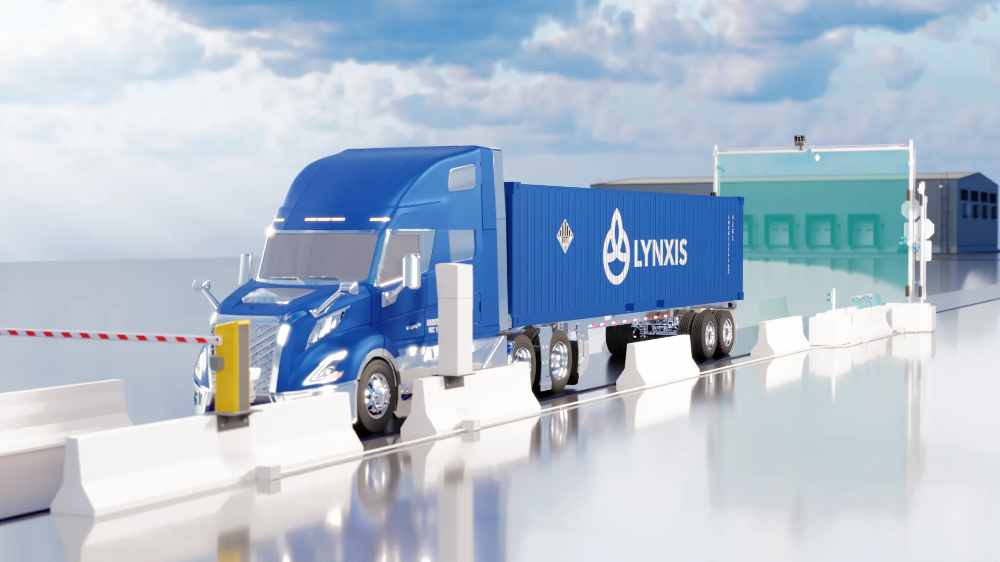
Shipping Company 3D Rebrand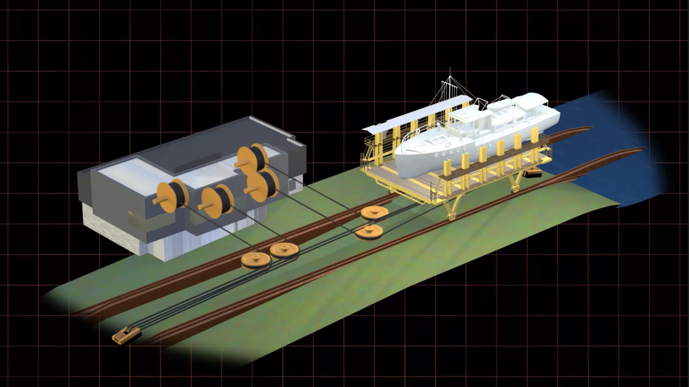
Marine Railway Model History Youtube Channel
History Youtube Channel
 Financial Youtube Channel
Financial Youtube Channel
 Engineering Youtube Video
Engineering Youtube Video
 VFX for Short Film
VFX for Short Film
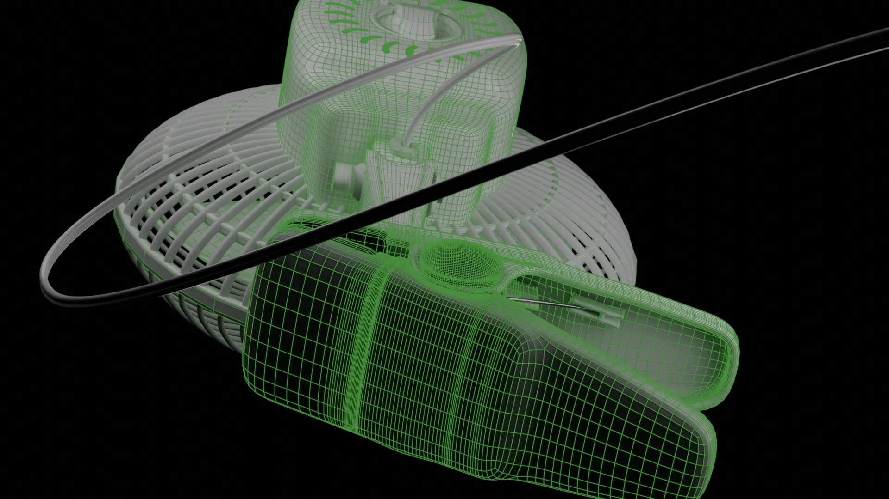
Fan 3D Model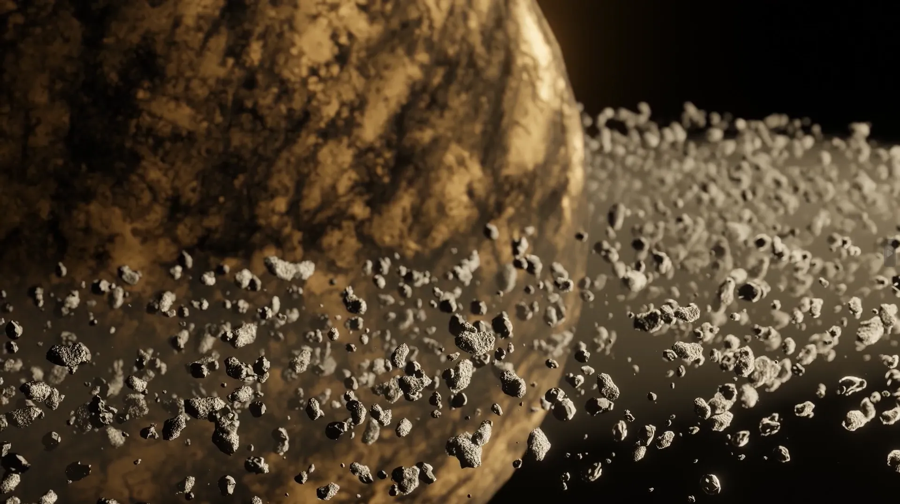
Solar System Renders True Crime Youtube Channel
True Crime Youtube Channel


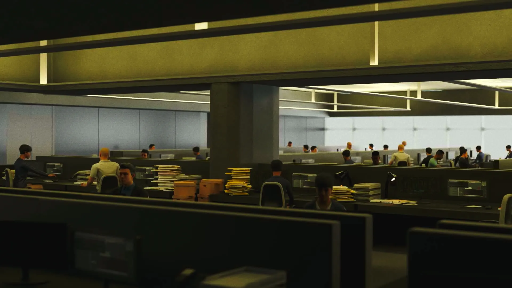
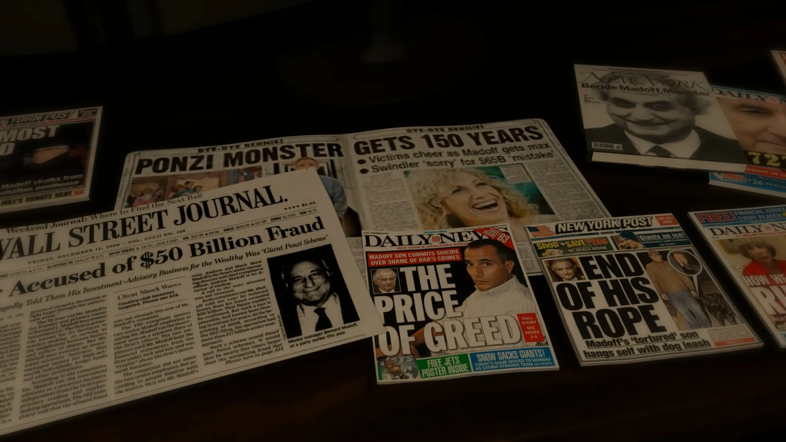
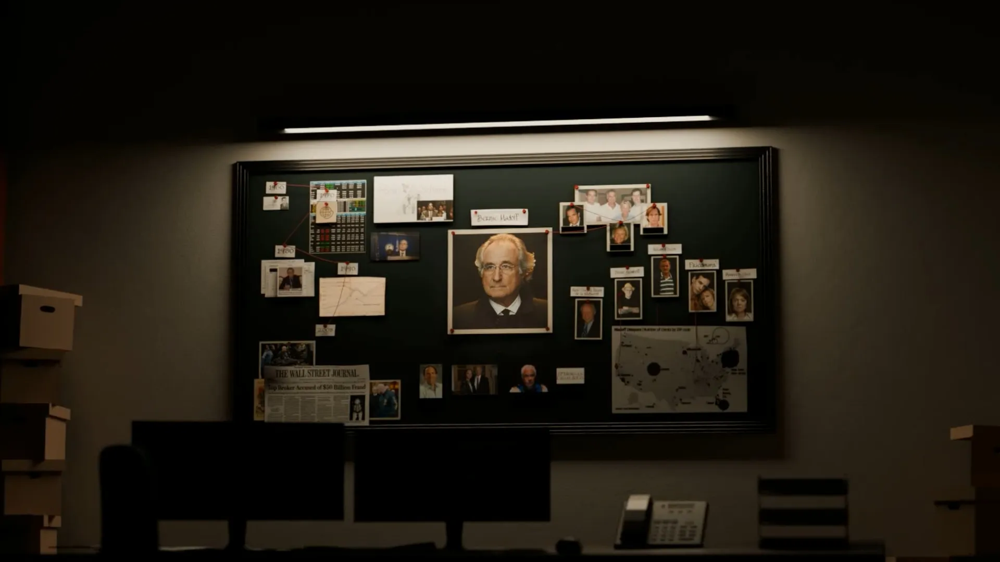
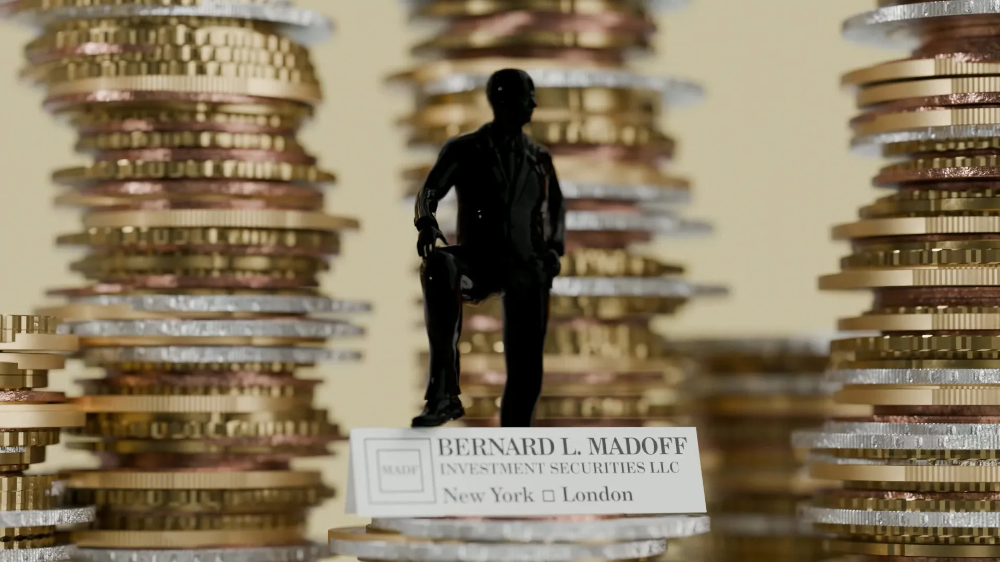
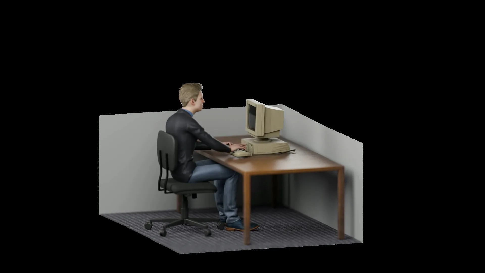
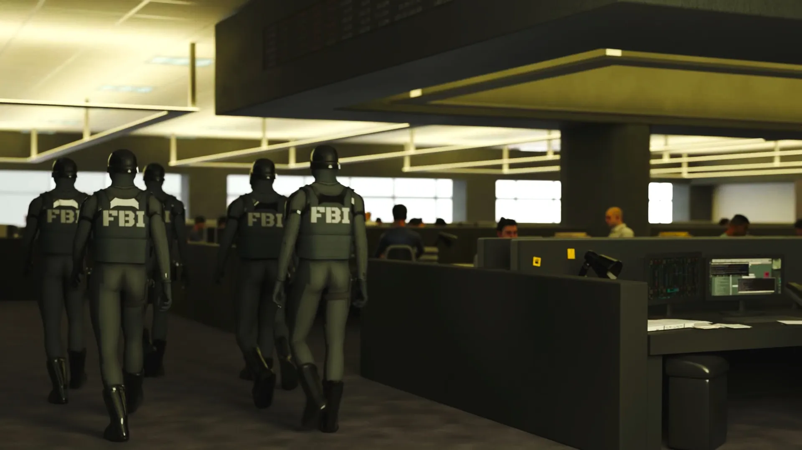
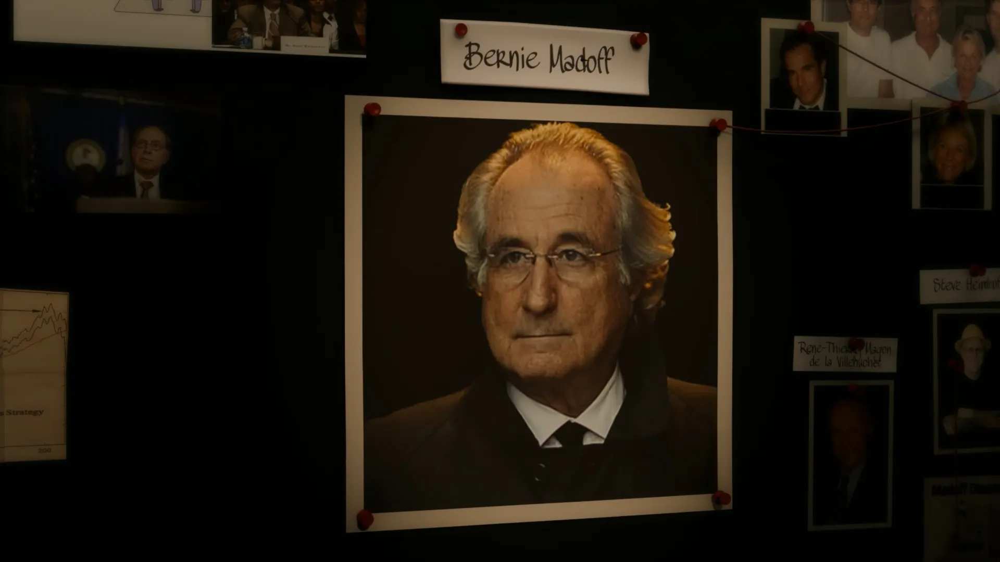
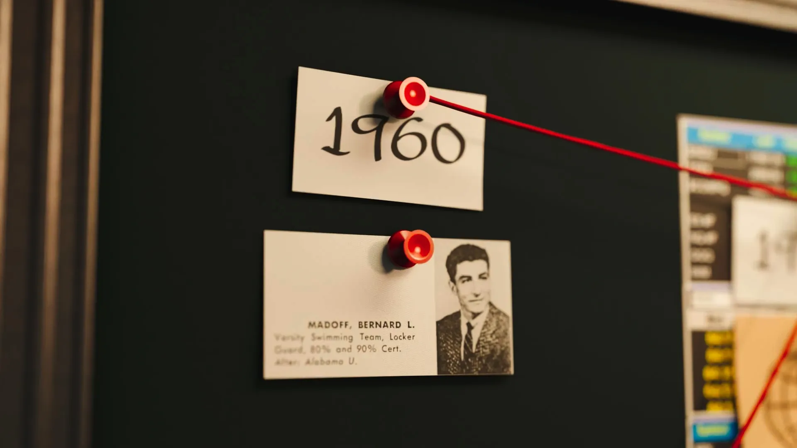